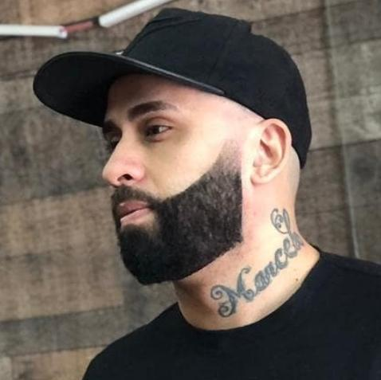
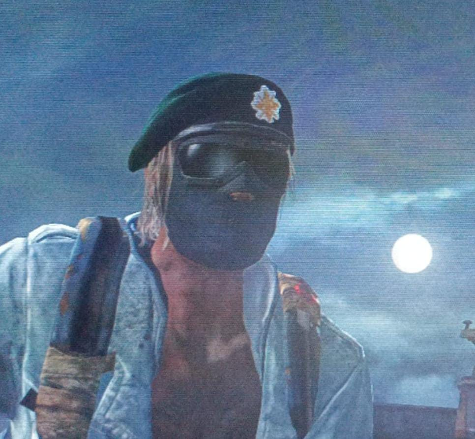

Informações dos membros da
ELITE lasto fus
GirlGamerrBR
Uma guerreira, jogadora de BURST, dá muitas rajadas na cara dos oponentes. Às vezes dorme no meio das partidas, mas é esforçada.
PedroHenrique_91
Muito conhecido por ser o jogador mais otimista do grupo, sempre colocando o time pra cima, ajudando o máximo que pode. Nos momentos de morte súbita, ele é quem dá algum raio de esperança para a equipe, sempre acreditando que os companheiros podem fazer um comeback.
duduccw
Atirador de ELITE. Um dos mais temidos. Mata muito quando não está mexendo no celular.
Raposa3000
Nem disfarça mais que usa CT e fica camperando. Mas é gente boa e isso que importa.
juliocesar100901
Um dos snipers mais temidos do TLOU. Mas atualmente só joga com permissão da esposa.
felipesenval21
É membro platina da ELITE do lastos fus. Joga de BURST, e ninguém segura. Ponto fraco: MOLOTOV
 MITO_GUIMARAES
Escopeteiro tático de alta qualidade. Não é muito fã de perder. Faz uma dupla imbatível com a colega GirlGamerrBR.
SAMURAY_CWB
Jogador de escopeta tática e velho oeste. Discreto. Tão discreto que às vezes mata uns 10 e morre só 2.
F11_Diaz
Sniper simpático, às vezes mata muito, às vezes mais ou menos, mas tem bom humor. Diz ele que no passado era o bichão.
 BahhhTche
Um dos melhores jogadores que já existiu no multiplayer do TLOU. Lendário. Joga de BURST. Aliás, não joga, dá show de burst.
XIX_uchiha_XIX
Jogador esforçado, pai do David. Número de kills varia muito por partida.
Windoh_Hardy
Um cara que tem potencial pra ser um dos melhores. Mas ainda está longe disso.
David10032006
Um rapazinho que passa as melhores calls do TLOU. A comunicação com ele sempre é impecável durante as partidas.
Monstr0_texas
Sniper de elite, mas se aposentou do TLOU. Uma grande perda.
equipecron... equipegomes
Também faz parte da ELITE do lastos fus. Jogador de BURST alto nível. Só é meio lento na comunicação.
EMERGENCY
(em análise)
Guh_The_Last
Sniper de qualidade, atento, parceiro e esforçado.
FUZ1L31RO19
Gente boa. Algumas vezes joga mal, e outras vezes também.